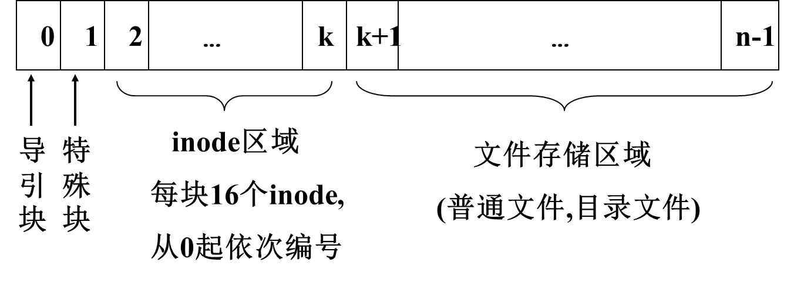
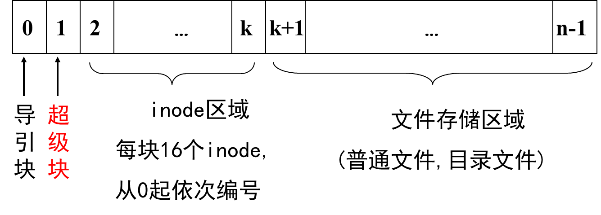
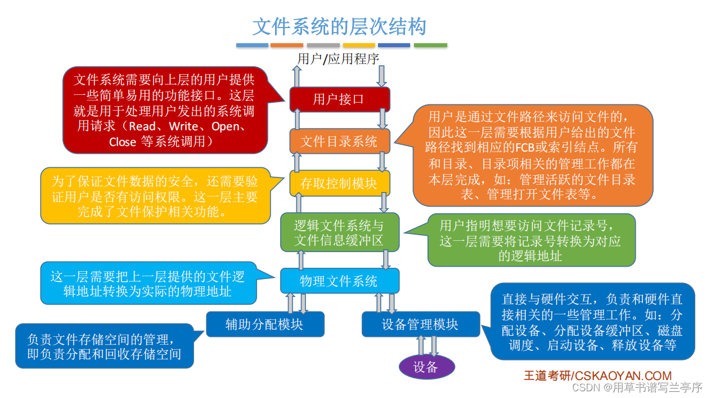

文件与文件系统
文件
- 文件：具有符号名而且在逻辑上具有完整意义的信息项的序列
- 文件系统：文件与管理文件的程序集合
- 普通文件：程序、数据、图象等，保存在磁盘块中
- 目录文件：(文件名，文件号)序列，保存在磁盘块中，记录文件名，文件存放地址，文件属性等
- 特殊文件：设备
访问方式
顺序访问：起始位置，中间某位置
随机访问：记录编号，关键字（Key)
文件的组织
逻辑组织：（对于用户而言）
- 记录式文件：记录的序列
- 流式文件：字节的序列
物理组织：文件和磁盘块的变换关系（文件逻辑块号与物理块号的映射）
- 顺序结构：一个文件占有若干连续的磁盘块
- 链式结构：块间以指针相连（又分为隐式连接和显示连接（FAT))
- 索引结构：块号记在索引块中
- Hash结构：通过哈希函数对关键字计算文件的地址
- Unix结构（索引+链接）：多级索引
- 倒排结合：以键值和记录地址构成的索引结构称为倒排结构
文件目录
- 文件控制块（FCB）：文件存在的标志，其中保存系统管理文件需要的全部信息
- 建立文件时创建，删除文件时撤销
- 目录项：目录文件的一项，内容为FCB
[!note]
- 文件目录：检索文件的目录
- 目录文件：内容为目录项的文件
- 单级目录：目录过多，不利于多用户管理
- 两级目录：多用户文件系统，每个用户有各自的主目录
- 多级目录
文件路径名
- 根目录：在实现时，根目录保存在外存空间中的固定位置
- 当前目录：用户正在使用的工作目录
- 绝对路径：从根目录开始的路径名
- 相对路径：从当前目录开始的路径名
文件目录的查找
- 查找路径：根目录（绝对路径），当前目录（相对路径）
查找算法：顺序，hash，对分（文件名有序）
目录查询技术
- 在单级目录中，利用用户提供的文件名，用顺序查找法直接从文件目录表中找到指名文件的目录项
- 从目录项中找到文件号
(i_number) - 通过
i_number找到文件inode - 通过文件
inode找到文件的磁盘块 - 读入磁盘块，如是目录文件，则根据下一级目录继续查找，否则，找到文件
改进
FCB：分为主部和次部，也就是文件的索引节点结构
- 次部：文件名和文件号，保存在目录文件
- 主部：其他属性，链接记数，保存在
inode区域，对应的节点称为i节点
[!note]
- UNIX文件卷(volume)组织形式：

文件的共享
- 节省存储空间
- 进程相互通讯
文件共享模式
- 不同时使用：根据共享说明核对使用者的访问权限
- 同时使用：根据共享说明和
(relaxed)R/W规则以保证文件的共享不会发生冲突
文件共享的实现
- 公共目录：登记共享文件
- 共享说明：指明哪些用户不可以使用，哪些用户可以使用
- 连接：使一个文件具有多个名字，用户可以使用不同的名字访问同一文件
文件的保护
- 保护，保密，安全
存取控制矩阵
- 将用户关于所有文件的存取方式记录在一个矩阵中
访问权限说明
- 将用户分为若干类，同类用户对于同一文件具有相同的访问权限
- 例如linux文件权限里对于一个文件将用户分为文件属主，同组用户，其他用户
- 文件属主判别：访问进程
u_uid==i_uid- 同组用户判别：访问进程
u_gid==i_gid- i_mode在创建文件时给出，
creat(filename, mode)- 其后文件主可以修改：
chmod(filename, new_mode)
分级目录
在多级目录系统中，可规定不同用户对同一子目录的访问权限。若一个用户不能访问某一目录，则他也不能访问该目录下的文件
文件保密
- 口令：创建文件时用户规定一个口令，记在FCB中
- 密码：对文件内容加密，速度慢，效果好
文件系统的安全
备份：定期将磁盘上文件复制到磁带上，发生故障时由磁带恢复(limited recovery)
完全转储：定期全部复制
增量转储：每次只复制上次转储以来修改部分
差分转储：开始进行完全转储，以后每次备份当天与第一次备份不同的数据
文件系统的实现
外存空间管理
- 字位映像图
- 空闲块链
- 空闲块表：Linux, 分给一个文件的磁盘块在物理上连续
- UNIX:成组连接（分给一个文件的磁盘块在物理上不一定连续)
UNIX外存空间管理
- 成组链式法

- 超级块：记录本卷上inode块和一般块的分配情况
- 文件卷安装(mount)后超级块读入内存。
UNIX成组连接
空闲块链和空闲块表：涉及超级块中
s_free[100]、s_nfree和s_flock这3个数据结构s_free包括一个由连接块构成的成组连接块的链头（s_free[0]即是一个空闲块又是一个链接块 ）s_flock表示互斥操作空闲块数据结构的锁标识
空闲块管理
100个空闲块为一组，组之间相互链接，最前面的组记在超级块中，安装后缓冲到内存。
申请时：
s_nfree>1, 分配s_free[--s_nfree]所指的块;s_nfree=1, 将s_free[0]所指的连接块读入内存缓冲区, 分配s_free[0]所指的块.释放时：
s_nfree<100, s_free[s_nfree++]=释放块号;s_nfree=100, 将s_nfree和s_free拷贝到释放块中,写回外存,s_free[0]=释放块号, s_nfree=1
空闲inode管理
s_inode最多可以记载100个空闲inode(编号)
申请时：
s_ninode>0, 取s_inode[--s_ninode];s_ninode=0, 由磁盘inode区顺取100个空闲i节点(i_nlink=0)，将其编号填入s_inode表中，修改s_ninode，再分配释放时：
s_ninode<100, s_inode[s_ninode++]=i_number(释放的);s_ninode=100, 丢弃
内存所需表目
- 用户打开文件表（每个进程一个）
u_ofile[](每个进程一个)：一个指针数组，其内容为指向file表的入口指针，数组下标表为文件描述符fd（进程自己的fd）nfile(整个系统一个)
- 系统打开文件表
Inode(整个系统一个)
文件系统的界面
读文件
read(fd,nrd,buf)fd:文件描述符，nrd读入记录（字节）数，buf读入内存的起始位置
fd由fd查用户打开文件表，找到对应的入口- 合法检查
- 查系统打开文件表，找到文件地址
- 读：据offset和nrd计算下一个待访问块的逻辑块号和块内起止位置，根据文件物理结构得到逻辑块号对应的物理块号；
- 返回实际读取字节数
写文件
write(fd,nwt,buf)
同理，不同在于写
日志结构文件系统
[!note]
- LSFS将整个磁盘看做一个日志，周期性地追加新日志。
- 写操作并非直接反映到磁盘上，而是被暂时存到内存缓冲区中，其中包括新写的数据，也包括更新数据。
- 当积累到一定规模时，作为一个
segment追加到日志的末尾
每隔一定时间，文件系统会将更新后的元数据及文件内容写入磁盘
Inode map系统维持一个
Inode map，以实现i-number到磁盘inode的映射清洁线程（cleaner)
循环扫描磁盘并对segment进行压缩
文件系统的层次结构

用一个例子来辅助记忆文件系统的层次结构:
- 假设某用户请求删除文件“D:/工作目录/学生信息.xlsx”的最后100条记录。
- 用户需要通过操作系统提供的接口发出上述请求一用户接口。
- 由于用户提供的是文件的存放路径，因此需要操作系统一层一层地查找目录，找到对应的目录项――文件目录系统
- 不同的用户对文件有不同的操作权限，因此为了保证安全，需要检查用户是否有访问权限―一存取控制模块（存取控制验证层)
- 验证了用户的访问权限之后，需要把用户提供的“记录号”转变为对应的逻辑地址――逻辑文件系统与文件信息缓冲区
- 知道了目标记录对应的逻辑地址后，还需要转换成实际的物理地址――物理文件系统
- 要删除这条记录，必定要对磁盘设备发出请求――设备管理程序模块
- 删除这些记录后，会有一些盘块空闲，因此要将这些空闲盘块回收――辅助分配模块。